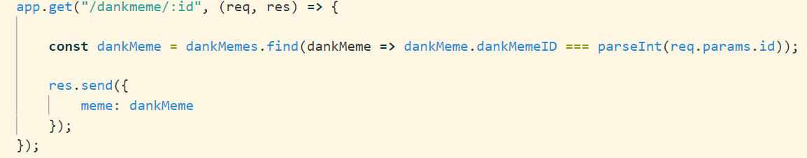
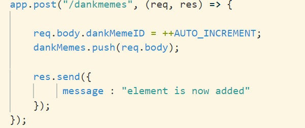
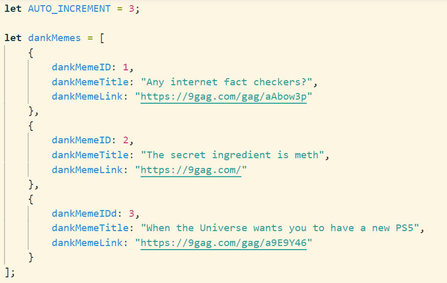
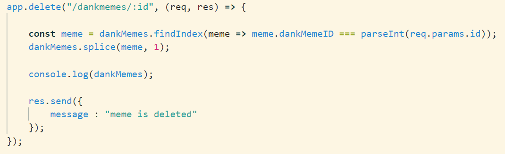
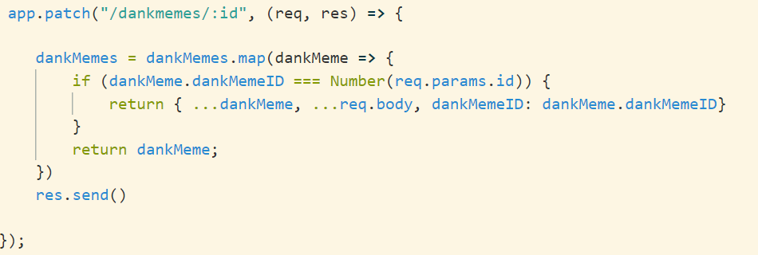

Dette er filen, hvor vores forskellige request vil være, hvilket i teorien er den, den styrer
vores backend.
Denne fil kan køres ved enten at skrive "node app.js" eller installere nodemon i vores
dependencies og skrive "nodemon app.js".
GET mapping - Eksempel der henter et dankmeme med et specifikt id

Overstående er et eksempel på en Get metode med et endpoint og en callback funktion.
Callback metoden tager imod to paramtre, som er req = request, res = respond.
Årsagen til, at vi gerne vil benytte en callback funktion er fordi, vi ikke ønsker, at vores
endpoint skal blive blokeret.
I denne metode bliver der benyttet en parth variabel - dette indikiere :id.
Vi bruger vores res.send til at sende et json objekt return - dette bliver vist i browseren.
POST mapping - Eksempel der poster et nyt dankmeme

I dette eksemplen sætter vi id'et på det nye til at være værdien af den let variabel, der hedder
AUTO_INCREMENT+1.
Derefter pusher vi req.body til et array, der er deffineret - dette er vores body på vores json
objekt og derefter sendes der besked retur.

DELETE mapping - Eksempel der sletter et dankmeme med et specifikt id

Ligesom ved get mapping bliver der her benyttet en parth variabel, som er et id.
Vi deffinerer en const varibale, der kaldes meme. Vi bruger findIndex på vores liste fra
tidligere, for at finde det meme vis id er det samme som vores parth variabel og få dets index.
Derefter bruges
splice funktionnen på vores liste. Denne funktion har en startværdi (et index) og antal. Vi vil
gerne starte på vores specifikke meme og slette én, som er vores meme.
PATCH mapping - Eksempel der opdetere et dankmeme med et specifikt id
